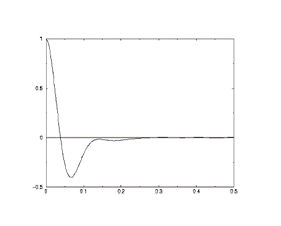

Correlation Functions
Correlation Functions
Correlation functions are a powerful means of analysing time dependent data. In molecular dynamics they are the primary means by which the average time dependent properties of a system of atoms are determined. (Though it is important to note that the usefulness of correlation functions is not exclusive to time dependent phenomena, and correlations in space are equally important. In fact, in the following description, the time dependence of the functions may be replaced by a distance dependence, without violating the principles.)
Suppose there are two time dependent properties of a system, which can be written as A(t) and B(t) to show they are functions of time. Suppose also that a connection between these two functions is suspected - the value of one of them at a particular time influences the value of the other at some time later. In other words there is a cause-and-effect relationship operating between them. How can this be proved? Calculating the correlation function is a way of doing it.
The best known example of a correlation function is the velocity autocorrelation function, which correlates the velocity of an atom with itself (hence the term autocorrelation). What this means is that functions A(t) and B(t) are both the particle's velocity. How can this be useful? Well, by correlating the velocity of an atom at a given time, with its velocity at a later time, it reveals what effect the interatomic forces have had on the atom's motion. (If there were no forces, the atom's velocity would never change, and the correlation would stay at a fixed value for all time.) In fact at short time the forces don't have much effect and the correlation is high, but as the atom interacts with its neighbours, the velocity changes and the correlation is reduced. The correlation function therefore reveals the time scale for changes in the atomic motion, revealing, for example, the average time between atom-atom collisions.

A typical plot of a velocity autocorrelation function (above) shows how the correlation decays rapidly from complete correlation at zero time, to become negative. After a short descent to a maximum negative value it rises again (in some cases becoming positive again). The long-time behaviour is a progression towards zero correlation. The first descent to negative correlation is a sign that the average atom collides with a neighbouring atom and bounces back - giving the atom a velocity in the opposite direction (with opposite sign).
Calculating correlation functions in a molecular dynamics simulation is a tricky procedure, but can be thought of as a form of ensemble average.